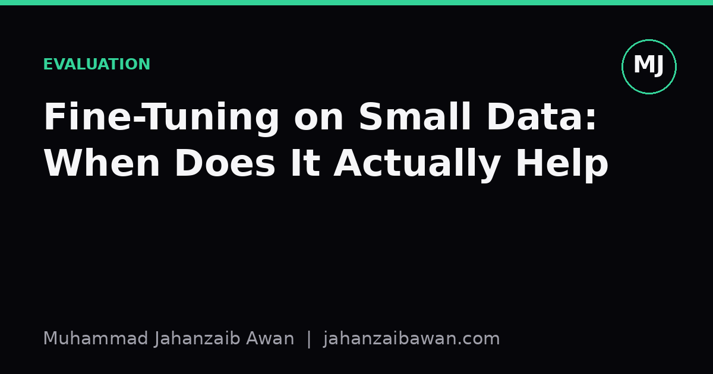

Fine-Tuning on Small Data: When Does It Actually Help
Before you collect another thousand labels, it helps to know what a genuine improvement looks like and how much data it typically takes to trust one.

The question nobody asks before collecting labels
Whenever someone asks me whether fine-tuning is worth it on a small dataset, my honest answer is that it depends less on the model and more on how confidently you can measure the outcome. Fine-tuning almost always moves the numbers a little. The real question is whether that movement is a genuine effect or just the noise you get from evaluating on a small, particular slice of data. With a hundred examples in your test set, a swing of two or three percentage points can easily be explained by which examples happened to land where.
This matters practically because teams routinely spend weeks labelling a few hundred examples, fine-tune a model, see accuracy go from 81% to 84%, and declare victory. Sometimes that is a real improvement. Sometimes it is one flipped prediction on a forty-example test set. Before asking how much data is enough for fine-tuning to work, it is worth asking how much data is enough for you to trust the evaluation that tells you it worked.
I think of this as two separate sample size questions that get conflated. One is: how many training examples does the model need to learn something useful. The other is: how many test examples do you need to detect that learning reliably. Both scale with the size of the effect you are hoping to see, and both are usually underestimated.
A worked intuition with concrete numbers
Suppose you have a pretrained classifier that already gets 80% accuracy on your task out of the box, and you are fine-tuning on domain-specific examples to push that higher. Imagine the true effect of fine-tuning with 200 examples is a genuine 3 point lift, taking you to 83%. If your test set has only 100 examples, the standard error on a proportion around 80 to 83% is roughly 4 points. A 3 point lift sits comfortably inside the noise band. You could run the same experiment with a different random seed and see the ordering reverse.
Now scale the test set to 1,000 examples. The standard error shrinks to roughly 1.2 to 1.3 points, and a genuine 3 point lift becomes visible above the noise most of the time. This is the unglamorous part of fine-tuning work: the improvement you are chasing might be real from the first hundred training examples, but you will not be able to see it clearly until your evaluation set is large enough to resolve differences of that size.
On the training side, the picture is similar but shaped by the difficulty of the task and how far the pretrained model already is from good performance. If a base model is already close to ceiling, say 92%, on a task with reasonably clean labels, fine-tuning on 50 to 100 well-chosen examples per class can sometimes close most of the remaining gap, because you are really just tuning a decision boundary that is nearly right already. If the base model is weak, sitting at 55% on a task that needs new vocabulary or a different structure entirely, a few hundred examples per class is often the point where you start seeing consistent gains, and a few thousand is where the curve visibly bends rather than just wobbles.
The honest number I give people who ask for a rule of thumb is this: expect diminishing but real returns from a few dozen examples per class if the task is close to something the base model already knows, and expect to need low thousands of examples if you are teaching it something structurally new. Anything below that, treat your result as a hypothesis, not a finding.
Leakage and the illusion of a working small dataset
Small datasets have a particular way of lying to you, and it is not just noise, it is leakage. When you only have three hundred examples and you split them randomly into train and test, near-duplicate examples, shared templates, or examples from the same underlying source document often end up on both sides of the split. The model then appears to generalise beautifully, because it has effectively seen the test set in disguise. This is the single most common reason a small fine-tuning experiment looks like a clear success and then falls apart on genuinely new data.
The fix is not a bigger model or more clever fine-tuning, it is a split that respects the structure of your data. If your examples come from documents, split by document, not by example. If they come from users, split by user. This usually shrinks your apparent gains, sometimes dramatically, and that is the point: it is showing you the gain you can actually rely on rather than the gain your split was accidentally flattering.
I would also flag that with small datasets, a single train and test split is a fragile basis for any conclusion. Cross-validation, done properly with the same leakage-aware grouping, gives you a distribution of scores rather than one number, and that distribution tells you far more about whether fine-tuning helped than any single accuracy figure. If your fine-tuned model beats the baseline in four out of five folds by a small margin, that is a more trustworthy signal than beating it once by a large one.
A practical checklist before you trust the result
Before concluding that fine-tuning on a small dataset made a difference, I check four things. First, is the test set large enough that the observed gain is bigger than the expected noise for a set that size. Second, is the split free of leakage at the level that actually matters for the data, whether that is document, user, or time. Third, does the gain hold up across several folds or seeds rather than appearing in one lucky run. Fourth, does the gain hold on a slightly different slice of data than the one it was tuned against, since small datasets invite overfitting to their own quirks.
If all four hold, then even a modest dataset, a few hundred well-chosen and correctly split examples, can produce a fine-tuning result worth acting on. If any of them fail, the honest move is to say the evidence is inconclusive rather than to round a shaky number up to a success. That is a less satisfying sentence to put in a report, but it is the one that will not embarrass you three months later when the model meets real data.